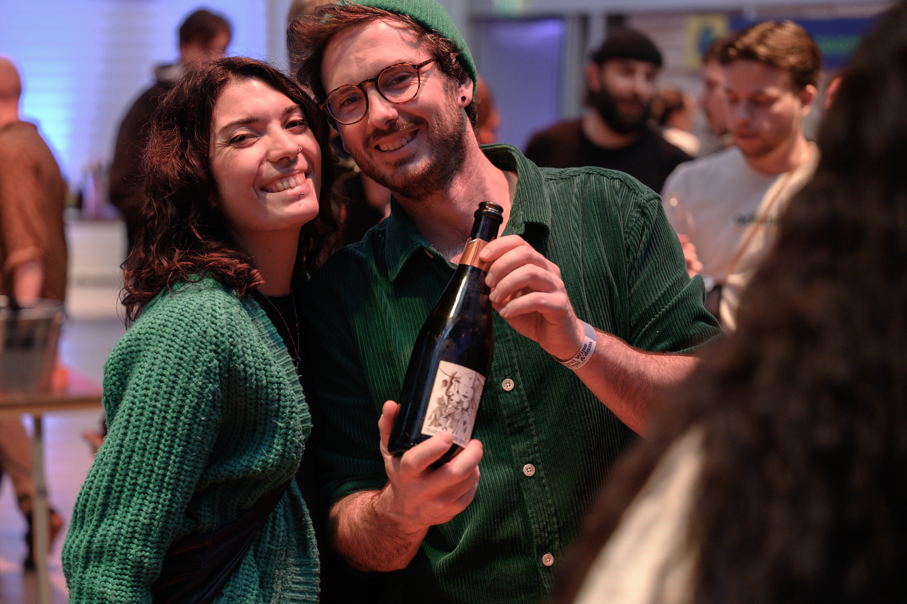

contents
40+ growers



this edition, for the first time, open to 75 visitor seats. our post-event dinner for winemakers, distributors and mutual crews grew over several editions into something unique. the spirit of sharing, great food, good company, truly meeting. five courses, water included, byo wine bought at the fair. €65 p/p.

the tasting floor, with an all-day wine bar, a craft food market and an oyster bar alongside it.
winemaking industrialised in the 20th century: fertiliser, pesticides, added yeasts, sulphites. these growers refused. they farm without chemicals and let the wine reflect the ground it came from, the canaries in the coal mine of agriculture.
tell it what you're eating, or the bottle in your hand. two picks, the reason behind them, and the shop nearby. all year round.
ask the natural →